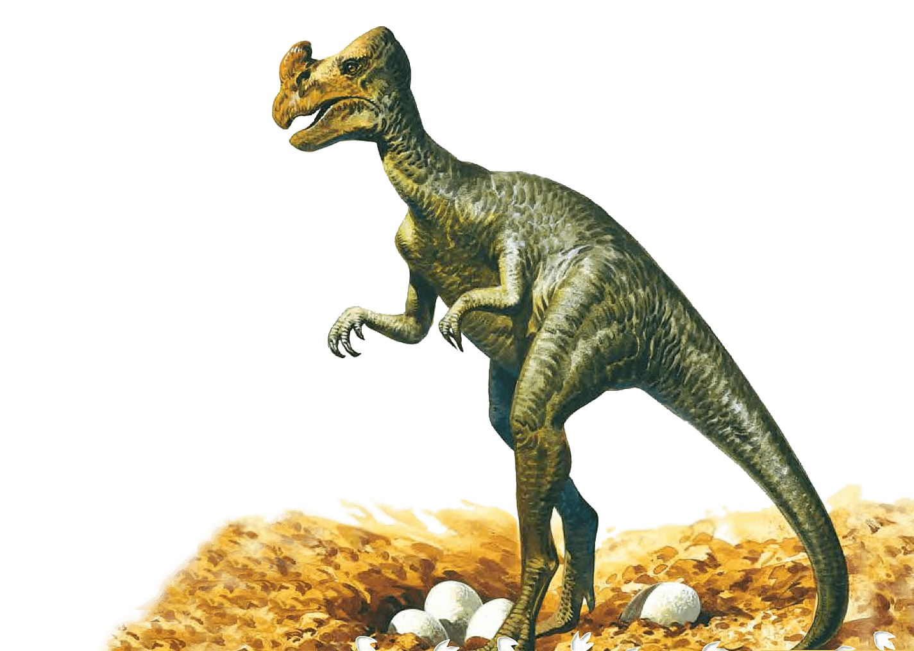

Mark Norell answers kids' questions about dinosaurs. He’s a paleontologist at the American Museum of Natural History.
1. What's the biggest dinosaur you've ever found?
Mark Norell: The biggest fossil dinosaurs I've ever found are sauropods from Central Asia as well as from the American West. These animals are related to the Apatosaurus and Mamenchisaurus. Mamenchisaurus is a giant sauropod from Central Asia. These plant-eating animals had fantastically huge, long necks and were the heaviest and longest dinosaurs ever found. Sauropods were the biggest animals ever to walk Earth .
2. What's the weirdest dinosaur you've ever found?
Mark: The weirdest fossil dinosaur I've ever found had to be Shuvuuia, a relative of Mononykus. It's weird because no one would ever have imagined an animal that looked like that would have ever lived. It had really powerful, but extremely short forelimbs. These theropod dinosaurs had bodies about the size of a goose, but with long legs. Shuvuuia and Mononykus were both discovered in Mongolia , and had feathers. They were both birds, but they really didn't look like them.
A recreation of the Shuvuuia from FunkMonk (Michael B. H.).
3. What's the most interesting dinosaur fossil you've ever found?
Mark: Probably the most interesting dinosaur fossil I ever found is the nesting Oviraptor. This fossil really tells us something special about the past: that these animals looked and behaved like birds. The specimen found where the adult Oviraptor is positioned on a nest of eggs is compelling evidence that these animals behaved like parents in a very bird-like way. This behavior, coupled with such birdlike characteristics as a toothless beak and possibly feathers, strengthens the bird-dinosaur connections even more.
4. How long does it take for bones to become fossilized?
Mark: Not all fossil bones are alike. Some fossil bones that are 60 or 70 million years old have a lot of their original chemical composition. They almost seem more like bone than rock. Other fossil bones could be "just" 10,000 years old, but they're so hard you could drive nails with them. How long it takes depends on the conditions the bone is buried in. Here's a tip. When you find a fossil bone, you already know something about the animal. You know it must have been buried very quickly. Why? Bones left exposed for long would decay. After an animal is buried, the specific conditions of the local environment come into play.
5. Where are some of the best places in the world to collect dinosaur fossils?
Mark: So far, there are really only four great places in the world to collect dinosaur fossils. First one is he American West (much of the collection we have at the Museum was collected from Montana). The second one is Patagonia in Argentina (this area is now being explored by paleontologists, including some from my Museum). And the last one, Africa, at the edge of the Sahara desert. Mongolia in Central Asia.
6. What do the great dinosaur fossil locations in the world have in common?
Mark: First, they are in the middle of very stable continents. A stable continent is one without a lot of earthquakes , volcanic eruptions, or other major geological events that would destroy the fossils. Second, they have the kinds of landforms that preserve fossils well, such as badlands. In badlands, the forces of erosion, such as wind and water , have exposed layers of rock that contain fossils.
The badlands of Argentina are a popular spot for collecting dinosaur fossils. (Ischigualasto Provincial Park – aka Valle de la Luna – in San Juan Province, Argentina. Photograph: Alamy)
7. Do you think there are more kinds of extinct dinosaurs that have never been found?
Mark: Yes! Every few weeks somebody describes a new one. We just described one. When an unknown dinosaur is found we write a detailed report on what we have discovered. This report is know as a 'description.' Paleontologists usually name the dinosaur in their description. Certainly on our next field trip we'll find a new one. There are many more dinosaurs waiting to be found than have been found. A lot of these have been collected and are in museum collections. They just haven't been studied yet.
8. Why did dinosaurs become extinct?
Mark: All dinosaurs didn't become extinct because modern birds are, in fact, dinosaurs. There are scientists in our Ornithology Department who are investigating the 15,000 species of birds alive today. That's 15,000 different kinds of living dinosaurs! So get some binoculars and go dinosaur watching. Now, let's talk about why the non-bird dinosaurs became extinct about 65 million years ago. The answer is: we don't know. That question is unanswerable based on the fossil record. I have no doubt a big meteorite hit Earth about 65 million years ago, but it's very hard to directly connect this event to the great dinosaur extinction.
9. How did paleontologists discover that modern birds are actually dinosaurs?
Mark: Like most discoveries in science, it wasn't a sudden realization like a light bulb going on but the gradual gathering of evidence and observations. So, the idea that modern birds are related to dinosaurs is pretty old. In the 1850s, scientists who examined skeletons noticed a great degree of similarity between birds and traditional dinosaurs. Then this idea lost favor until the 1960s when we had better methods for analyzing the evidence and creating a family tree. Since the 1960s, many pieces of evidence that have been discovered support the idea that birds are descendants of certain dinosaurs that lived millions of years ago.
Tyrannosaurus Rex Fossil by D. Finnin/© AMNH
10. Why do you think that all the birds came from a common ancestor?
Mark: Think of it this way. Or draw it. If every animal that has feathers has a backbone but all animals with a backbone don't have feathers – what we're are saying is that both feathered and non-feathered animals come from a common ancestor with a backbone. The simplest explanation is usually the right one. Why? Think about it. Is it likely that feathers evolved 15,000 different times in each kind of bird species? Feathers evolved once, and all feathered creatures descended from that first feathered animal, changing other characteristics in response to its environment.
11. Is it possible to clone an extinct dinosaur?
Mark: Cloning is a complicated issue. Here's as simple an answer as I can give. To clone an animal, you need the complete genetic code, the blueprint of how the animal is constructed. The genetic code is huge and complex. It consists of long strands of DNA which generally don't survive the fossilization process. Even if we did have the genetic code for extinct dinosaurs, the technical aspects of creating an embryo and growing it are virtually impossible
